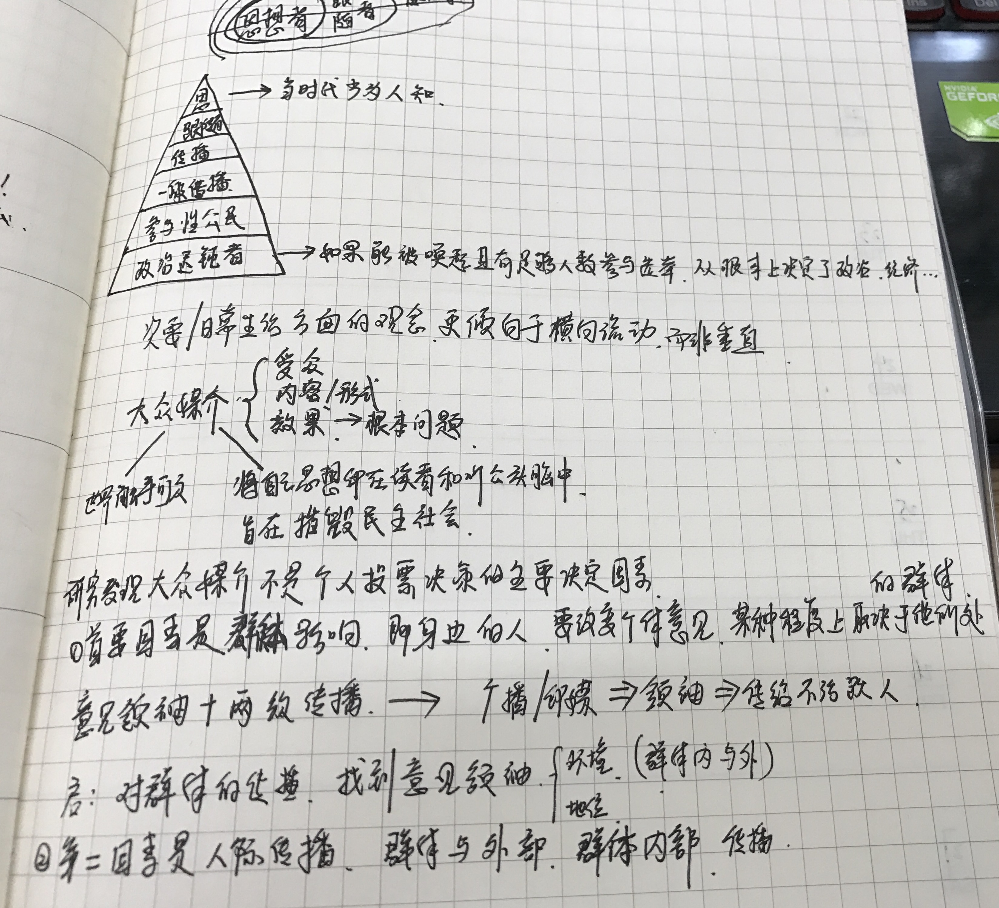

movie
透明人
特效在当时应该不错了吧，起码比某某人间要强。。。话说这电影竟然是第二次看，第一次看完还兴致勃勃找了透明人二来看，只记得当时失望透顶。刚好同学在看，顺便跟着看了一遍。我愈发觉得人的记忆是很奇妙的，如果我凭空回忆一部很久以前看过电影，那么很可能一无所获，记得几个关键情节和人物就算不错了。但是当我重新看电影画面时，我的头脑就会非常清晰的浮现出接下来要发生的画面。这是什么原因，记忆的连贯性么？所以很多学习方法讲究快速连贯的多看几遍书么？而且我感觉学习记忆最最最最有价值的方法就是回忆，他和直接看一遍有什么区别呢？有时间真要找本相关的书看一下。
罗曼蒂克消亡史
就看了XX那部分 很失望 感觉索然无味233
记忆大师
剧情硬伤太多了
但是演技好啊
没办法 完全靠演技拉剧情
配乐听上去很烈害 但是并没有什么用 很突兀 可能是影院的问题 太响了
攻壳机动队
额 我对透明衣很不满意
春光乍泄 姜文
值得再看 结尾有一段太短了
逃出绝命镇
额 怎么说呢 一点都不恐怖 甚至有点想笑
虽然大部分恐怖片都是逻辑不通的 但是这个脑洞很大啊
先是催眠，让人听一下汤勺敲杯子就失去控制，然后移植大脑，把白人思维移植到黑人身体里，但是黑人本体意识却不会消失，而是会像陷在一个黑洞里，从窗口看自己的人生。唯一的bug是闪光灯一拍，控制会失效还是怎样，反正结尾主角靠这一点活了命。家族犯罪的典型啊。父亲神经科医生，负责移植顺便还有身体拍卖，母亲催眠大师，女儿物色黑人男朋友然后骗到家里来。爷爷奶奶移植成功活在黑人身体里然后伪装成仆人的样子。弟弟这个角色有什么作用，完全没什么用吗？爷爷半夜为什么跑步，暗示他是运动员输了黑人么。。。这个梗我看到当时一脸懵逼，想了半天哭笑不得，这也能算是伏笔之类的么？真的垃圾。除了种族这个大概念立意高点，真不觉得和那些国产恐怖片有什么区别。难道人家打色情擦片球就比种族歧视low很多么？不明白为什么评分很高，推荐的人还那么多。
黑客帝国1
脑洞很大 但根本不会觉得不合理 这才是优秀的电影啊
突然想到红蓝药片是在母体里面吃的 那么为什么母体里会有那种药呢 铺垫很深啊 之前看的时候完全没想过 但是你仔细一想发现还是没漏洞
海边的曼彻斯特
绝望不一定会让人痛苦 但希望也不一定不会
一条狗的使命
还是很感动的 讨厌中间警犬那部分 没有重看的价值
飞跃疯人院
哇 演的真的好 谁是疯子谁是正常人呢
莫名想起《天才在左疯子在右》 现在只记得里面那些疯子的想法都很天才
有时间应该再读一遍
说实话 我总觉得这电影在讲一个很厉害的道理 但是我还是有点迷糊 还要再看
霸王别姬
顶级中的顶级
金刚不坏
可能是我电影看得少 反正我觉得这部电影的飙车是最刺激的 肾上腺素飙升 可能是前期慢热铺垫的太足了么
比那些大制作的商业片不知高出多少倍
可是这部电影在昆汀系列里评价倒是不高 不得其解啊
至于有人说的什么女权啊 暴力啊 我都没看懂 我就觉得飙车真的好看 而且要把铺垫看完才会好看
嫌疑人X的献身
王凯帅的出戏 长太帅演戏类型也受很大限制啊 但是张国荣就不受限制 帅的类型不一样么？？或者演技问题么？总归是个精彩的诡计
乘风破浪
赵丽颖拍的好看 韩寒这种人的天赋是遭人妒忌的 反正我妒忌
serial
人民的名义
我就是好奇陆毅老婆到底是什么背景 翻了一下小说也没翻到。
不过我震惊的是侯勇老师演的那段贪官被抓在书里就那么寥寥几句话，演的这么丰富，真是佩服到无以复加。
小鱼儿与花无缺
又是王晶 王晶那种风格真的感觉是大悲大喜 有点受不住啊
前面好搞笑，后面好伤感，小仙女好可爱啊，一感觉她要死，后面直接放弃了。
话说里面的打斗场面很丰富啊，丰富到花无缺打小喽喽也要几分钟。
把古龙大大的动作戏拍这么丰富也是难为他们了。
好吧 忍不住又看了几集 小仙女死那集根本控制不住眼泪啊,哗哗哗的淌，感性之于我，不是没有，只是短暂，理智会很快占上风的。所以我再看到那些感性很强的文字，不应该嘲笑，而应该哭泣，为自己缺少那些情感而伤心。
少年包青天
硅谷
冰血暴
越狱
book
绝代双骄
看完小鱼儿，看一下小说，想不到是完美结局。成双成对，坏人也基本算是好结局了吧。可我一点一点也不喜欢，我还是觉得悲剧有感染力。难道我有受虐倾向？喜剧结尾真的没感染力，很多作品看到喜剧结尾我都忍不住呸一下它强行大圆满。记忆最深的就是釜山行结尾的时候，男主女儿和那个孕妇（好像）从隧道逃出来的时候，无数枪口盯着他们，竟然没开枪，竟然没开枪，竟然没开枪。我的天，如果砰砰两枪结局，最好是黑屏情况下的，也不用演命中的画面，那结尾多好啊。我真不是说真善美没有力量，没有感染力，但是感觉太假就一定不会有啊。跑题了。。。
以前总看有人对比金庸和古龙说他们处理武大画面一个讲形，一个讲意。有段子说这是因为他们稿费的计算方法不同导致的，因为一个按字数算，一个按行算。好在这本书里按行写的还不算特别多，不过古龙前辈真的对打斗画面描写的相当之潦草啊，我觉得是潦草，人家说这是写意，我总觉得差不多。小仙女出场那画面是从小鱼儿的所见来描写的，而其中两个人被打倒是怎么写的呢？古龙前辈说小鱼儿没看清。。。我真是醉了。
而且书中很多人物和电视剧的关系完全不一样，留了很多眼泪的小仙女在书里只是配角中的配角。说不定小鱼儿与花无缺这部我看来还不错的电视剧在当时一定是被那时候的人骂的狗血喷头了吧。想象一下了盗墓笔记，难道那时候人们看绝代双骄也是一样心情。。。。难道目前十岁左右的小孩长大以后回看盗墓笔记会觉得还不错么？？？我真是万万不敢相信这一点。
游戏也是这样啊，dota1鄙视dota2，dota2鄙视lol，现在lol又开始鄙视王者荣耀，随着玩家群体的扩大，游戏各方面都要适应更多的人，你永远不知道和你一起开黑的是80岁的老人家还是幼儿园里的小宝宝。那些挂机游戏也有很多人玩的不亦乐乎，其根本不需要任何操作，一个锁住的常亮屏幕放在小笼子里交给猫猫随便点都可以。为什么呢？锤子刚开的发布会里，老罗大概介绍到他的手机是为精英研发的时候说了一句话我觉得有意思，他说 “将来有一天，我们的手机买了几百万几千万，街边随便一个人都在用的时候，你要知道，这个手机是给你们（锤粉？）做的。”我虽然对锤子产品很失望，但是这句话也同样有一个隐含逻辑，迎合大众实际上是降低品质的。
所以真的是乌合之众？那么民主呢？民主哪里来的自信呢？把世界交给精英处理会徒增普通人的困扰么？读书少，还是不要乱想了。。。突然想起乌合之众想看了好几次都没看下去，给自己差评。
萧十一郎
打折的可怕之处在于会有一种打折了不买就吃亏了的错觉，主要是看到古龙文集全集第一辑在kindle上只有几块钱，而最可怕的地方其实在于打折的东西买回来要是不用，就会有一种奇怪的痛心。所以看完绝代双骄虽然觉得不是太满意，我还是打开了萧十一郎。
对我来说不回忆的话，其实很容易忘记自己已经把过去很多东西都忘了这个事实本事。对于萧十一郎，我肯定是看过电视剧的，百度告诉我是2002年，我大概七八岁左右的样子。可我绞尽脑汁也只想起沈璧君，沈太君和一个人变成了一条蜿蜒的血色的蛇一样的东西，甚至我还一度怀疑是不是和水月洞天记混了。而有一些天才往往能对四五岁的事情如数家珍，对比下来还真是一件让人难过的事情啊。我只能安慰自己他们不过是对一些特别的事情记忆深刻罢，聊以自慰，聊以自慰2333.
倒不是很长，半个上午差不多就读完了萧十一郎，又一个多小时基本读完了火并萧十一郎的上半部分，可能精力耗尽了，反正不喜欢得很，直接看了一下结尾。总体感觉火并萧十一郎那本名字听上去就是同人作品的书完全是画蛇添足，萧十一郎虽然戛然而止但是总是干净利落的。可能是因为后面人物都有了结局，而我却对结局不满意造成的偏见么？
简化下来感觉故事就是一个他爱她，他爱她，她却爱他，他又爱上了他的故事。加上火并那里有一部分我一度以为还有她爱上了她的桥段，可惜并不是。（莫名的遗憾是哪来的。）连城璧，杨开泰分别爱沈璧君和风四娘，而这两个姑娘爱萧十一郎，萧十一郎爱沈璧君不得，后面又有一个花公子（我一度以为她是女的）和风四娘结了婚…人物关系真的很丰富，但是来来去去，我总是感觉不到具体时间和空间很不舒服。可能是网络小说荼毒很深，武力值的划分也是稀里糊涂，不明不白，很不舒服，总是用一些天下第一，风华绝代之类的描写，可是后面想打脸就打脸。
最总要的是古龙先生真的是潇洒的很的，基本没什么道德观念的束缚，沈璧君有妇之夫，想爱就爱，没有哪怕一点笔墨讨论道德约束的问题，风四娘也是，洞房花烛夜想逃就逃了，又能怎样呢？看怪异君毁经典，说古龙先生笔名的由来是因为早期爱上了个女孩叫小凤或者雏凤，不知真假，总归是风流啊。
家庭,私有制和国家起源
这是知乎上，有一个回答，关于婚姻制度与当今社会的意义里提到到，非常之感兴趣，可惜没有kindle电子原版，不过估计有我也看不懂，找了一个解读版本看一下。
五行天
好看 满分
天影
好看 但是里面的人物感觉黑化的很突然 完全没准备 总是感觉理由不充分啊 可能是个人错觉
择天记
垃圾 可惜我竟然还看了很久 改了电视剧之后 垃圾中的战斗机
黑卡
设定很好 但是写崩了 意料之中啊
孺子帝
好书 满分 结尾的理由说服了我，但是肯定是意犹未尽啊 不过里面的诡计解释的不好 有时感觉牵强的很。
永夜君王
整体不好看，大概是烟南水平最烂的一本，整个世界的设定就不好，可能是个人喜好问题，但是人物照例写的不错，和那些看完之后不仅记不住配角名字，连主角名字都记不住的网文比还是好很多。
人间失格 太宰治
好早就看过这本书的推荐，一直很想看，记得有一句评论很是吸引我，大概是说它平静的陈述了绝望而毫无希望。我是好奇的，当然，看了之后也不是特别符合我的预估。
看了之后倒是代入感一般，可能我的心情还没那么差吧。但是倒是感觉很真实，并不是说里面的故事情节之类的真实，而是细节上的真实而是自传自传式的真实。这种真实回避了很多自己不愿意承认的现实，淡化了不愿回想起来的细节，强化了很多自己主观上的想法。我最初发现这种有意思的情况还是在读李嘉诚自传的时候，由于刚翻完一本别人写的李嘉诚传，再看他自己的回忆时，就会发现在一些命运转折点的时候，在不同的角度上看，这命运的关键所在的地方往往区别很大。书里面他第一手札还是第二手札里明明确确的提及其目睹妻子被强奸而无动于衷，可到了后面真真确确的时间线发展到那里的时候，却说的混乱不明，甚至有点从无动于衷变为了无能为力。至于残疾的药店老板给他吗啡治疗酒瘾的时候，他会不清楚老板娘那奇怪的温暖贴心出自何处么？他知道，他不想承认罢了。
人间失格，失去了做人的资格。很明显，虽然第一手札里，他就笃定自己小时候就体会不到幸福的，但那是他住了精神病院的回忆了，那种情况下的回忆必然是带了色彩而失去客观的。谁又能说那个父亲是议员，家里莺莺燕燕一群小姐姐的主人公是不幸福的呢。即使他明确的认为自己只是逢场作戏，可那也是一种早慧并不是缺陷啊。所以关键的转折点还在于他独自外地上学，经济上没有什么限制又结交了损友。所以，最后从老板娘的口中，他还是说出了自己的心里话，那就是埋怨他的父亲，一个把他一人丢到外地读书，在他学坏又拒之门外的有身份有地位的父亲。
当然，这都不重要，我发现最重要的还是要帅啊，如果加上一点忧郁的气质才是吸引女人的无上法宝啊，即使你是个酒鬼，人渣，小白脸甚至瘾君子也无所谓的。
技术奇点
光速翻了一下，垃圾书。突然觉得应该看一下奇点临近。
斯坦福极简经济学
人际影响-个人在大众传播中的作用
《人际影响》一书首版于1955年，报告了在美国伊利诺伊州迪凯特市所做的先驱性研究的结果。
这项研究验证了保罗·拉扎斯菲尔德无意中的发现，即源自大众媒介的讯息在传播过程中经由了“意见领袖”的中转——他们在其所处的人际网络中为其他人筛选、 解释并扩散自己的所见所闻。本项经典性的研究聚焦于日常生活中的决策制定过程 （公共事务、时尚、电影观看、消费行为），为大众媒介与人际影响间互动关系的后继研究开辟了新的领域。本书的第一部分是一篇带有背景性的论文，详细论述了初级群体对于大众传播的令人惊异的现实意义。
